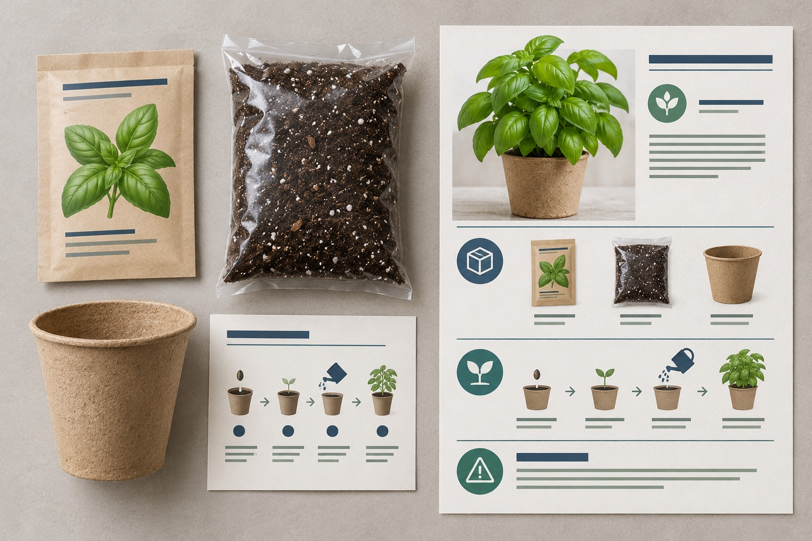
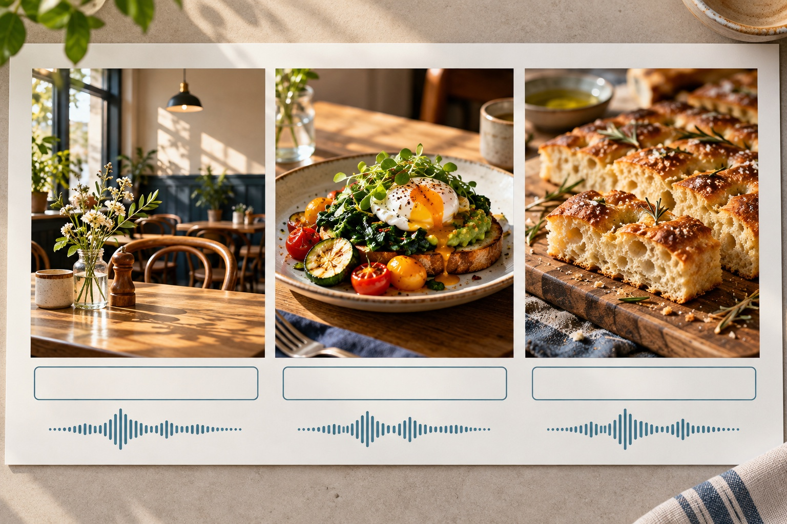

- 店名：ひだまりカフェ
- 焼きりんごトーストを10月限定で提供
- 毎日11時から。なくなり次第終了
- 来店前に提供時間を確認してもらう
- 価格、予約、個数は書かない
今日は、5つ全部を上手に作らなくて大丈夫です。
やってみたい1つを見つけ、架空の依頼で練習作品を1つ保存できれば十分です。
作っただけで受注や収入が決まるわけではありません。最後に、作品の見せ方と依頼前の確認も整理します。
この先の店名・商品・相談内容は、練習用の架空例です。実在する人や店舗の実績ではありません。
1
SNS投稿文
ばらばらの情報を、読める投稿文にする
新商品を知らせたくても、毎日の仕事に追われて文章まで手が回らない。そんなお店の、確認済み情報を短い投稿文へ整える仕事です。
なぜ経験が使えるのか
「この説明で初めての人に伝わるかな」と考えてきた経験が使えます。抜けや失礼な表現を見るのは人だからです。
最後に渡す物
確認済みの店舗情報だけで整えたSNS投稿文。価格など、依頼にない情報は足しません。
10月限定の焼きりんごトーストをご用意します。提供は毎日11時から。なくなり次第終了です。ご来店前に、提供時間をご確認ください。
1
最初の動作：ChatGPTで「新しいチャット」を選び、下の枠内を全部貼り付けて送信します。
コピー用の指示を全文見る
あなたは小さなカフェのSNS投稿文を整える担当です。 次の確認済み情報だけを使い、初めて読む人にも内容が伝わる投稿文を2案作ってください。 【確認済み情報】 店名：ひだまりカフェ 商品：焼きりんごトースト 期間：10月限定 提供開始：毎日11時から 終了：なくなり次第 読んだ人にしてほしいこと：来店前に提供時間を確認してもらう 【書き方】 ・最初の1文で、何のお知らせかを伝える ・本文は60〜100字 ・やわらかい敬語 ・確認できない価格、予約、個数は書かない ・最後に、提供時間を確認できる1文を入れる
「書いていないこと」を足していないか
- 店名、商品名、期間、時間が依頼メモと同じ
- 価格や予約方法を作っていない
- 強すぎる言い方がない
- 「毎日11時から」と「なくなり次第」が読める
保存先：回答をメモアプリへ移し、先頭に「架空の練習例」と書いて保存します。
2
告知画像
日時を、ひと目で伝わる1枚にする
写真がきれいでも、日時や内容が読めなければ伝わりません。AIで背景を作り、正確な文字は別のアプリで自分が重ねます。
なぜ分けるのか
背景と文字を分けると、日時の間違いだけを直し、読みにくい文字だけを大きくできます。
経験が使える所
「ここが一番大事」「小さすぎる」と気づく力が使えます。読む人が迷わない順番を考えます。
- ハーブの育て方教室
- はじめてでも安心
- 11月9日、10時から
- 明るい朝、バジル鉢、木の机
- 画像内の文字、ロゴ、人の顔は入れない
ハーブの育て方教室はじめてでも安心11月9日 10時から
画像はイメージです。背景を作ったあとに、文字を重ねています。
1
最初の動作：ChatGPTで背景を生成して保存します。次にCanvaなど、文字を配置できる別のアプリを開きます。
背景を作る指示を全文見る
スマホで見る縦長の告知画像に使う背景を作ってください。 目的は「ハーブの育て方教室」の告知です。 あとから自分で入れる文字は「ハーブの育て方教室」「はじめてでも安心」「11月9日」「10時から」です。これらの文字は画像内へ描かず、上半分に置ける余白だけを作ってください。 明るい朝の光が入る木の机に、元気なバジルの鉢を1つ置きます。 植物は画面の下半分にまとめ、上半分は文字を置ける明るく静かな余白にしてください。 自然で清潔な写真風。緑と木の色を中心にします。 文字、数字、ロゴ、人の顔は入れないでください。
腕1本分離して確認
- 内容、日付、開始時刻が依頼メモと同じ
- 見出しと日時が読める
- 文字が葉や鉢に重なっていない
- 読めない文字やロゴのような形が残っていない
詳しい制作は特典03へ。背景づくり、文字入れ、PNG保存まで1枚ずつ進められます。
3
商品説明
商品の特徴を、買う前に分かる順へ整える
商品をよく知る人ほど、伝えたいことは増えます。買う人が知りたい「何が届くか」「どう使うか」「注意」を順番にします。
なぜ経験が使えるのか
家族や知人へ使い方を説明した経験が役立ちます。「初めて使う人は、どこで迷うか」を想像できるからです。
最後に渡す物
商品、内容物、使い方、購入前の注意を、確認しやすい順に並べた説明文です。

- おうちバジル栽培セット
- 種、土、紙製ポット、育て方カード
- 土を入れ、種をまき、水を与える
- 日当たりのよい室内に置く
- 育つ時期は環境で変わる
室内でバジルを育て始めるためのセットです。
バジルの種、土、紙製ポット、育て方カードが入っています。土をポットへ入れ、種をまき、水を与えてください。日当たりのよい室内に置いて育てます。
育ち方や食べられる時期は、育てる環境で変わります。育て方カードも確認しながらお使いください。
この説明は、商品の特徴を増やしていません。依頼メモにある内容を、商品、内容物、使い方、注意の順に並べ替えています。
1
最初の動作：ChatGPTの新しいチャットへ、下の枠内を全部貼り付けて送信します。
商品説明の指示を全文見る
次の確認済み情報だけを使い、通販ページの商品説明を作ってください。 【商品情報】 商品名：おうちバジル栽培セット 内容：バジルの種、土、紙製ポット、育て方カード 使い方：土を入れ、種をまき、水を与える 置き場所：日当たりのよい室内 注意：食べられる時期は育てる環境で変わる 【構成】 1. どんな商品か 2. セット内容 3. 使い方 4. 購入前の注意 【禁止】 「必ず育つ」など結果を保証する表現、確認できない日数、健康への効果は書かないでください。
保証や、確認できない日数を入れない
- 入っていない物を足していない
- 使い方の順番が同じ
- 「必ず」「何日で」と保証していない
- 購入前の注意が隠れていない
保存先：依頼メモと完成文を並べてメモアプリへ残します。
4
問い合わせ返信
質問を分け、漏れのない返信にする
1通に複数の質問があると、答え忘れや、確認前の断定が起きます。質問を分け、確認できた答えだけを整えます。
なぜ経験が使えるのか
相手の気持ちを考えながら連絡してきた経験が役立ちます。「待っている人が次に迷わないか」を見られるからです。
未確認は作らない
答えがない項目はAIに補わせず、確認中 と残します。
11月9日のハーブ教室は、初心者でも参加できますか。持ち物、日程変更、キャンセル時の返金も教えてください。
- 初めての人も参加できる
- 持ち物は筆記用具
- 変更は3日前まで、空きのある回
- 返金の可否は判断できない
お問い合わせありがとうございます。
初めての方もご参加いただけます。持ち物は筆記用具です。
日程変更は開催3日前までご相談いただけます。変更先は空きのある回に限ります。
返金の可否は確認後にご案内します。
ご連絡は【連絡方法】までお願いいたします。
1
最初の動作：問い合わせ原文と確認済み情報を、ChatGPTの新しいチャットへ一緒に貼って送信します。
返信案の指示を全文見る
問い合わせへの返信案を作ってください。
相手の質問を「参加条件」「持ち物」「日程変更」「返金」に分け、次の確認済み情報だけで答えてください。
【問い合わせ】
11月9日のハーブ教室は、初心者でも参加できますか。持ち物と、申し込み後の日程変更について教えてください。キャンセルした場合、返金されますか。
【確認済み情報】
初めての人も参加できる
持ち物は筆記用具
日程変更は開催3日前まで相談できる
変更先は空きのある回に限る
返金の可否は、この情報では判断できない
【書き方】
・最初に問い合わせへのお礼
・質問ごとに短い段落
・返金については断定せず、確認が必要と書く
・最後に次の連絡方法を案内するための空欄を残す送る前に、4つの答えを指で追う
- 4つの質問へ答えている
- 変更期限と条件が正しい
- 未確認の返金条件を作っていない
- 宛名、連絡方法、署名を入れた
- 不要な個人情報をAIへ入力していない
練習ではメモアプリへ保存します。確認と修正が終わるまで、本番の送信欄へ貼り付けません。
5
ショート動画
話す内容を、3場面の構成にする
素材があっても、話と画面が合わなければ内容は伝わりません。編集前に、話す言葉・字幕・映像の対応を決めます。
なぜ経験が使えるのか
写真を見返し「この順番なら伝わる」と並べた経験が使えます。編集の前に、話と画面のつながりを整えます。
完成の範囲
練習は3場面の構成表まで。編集を頼まれたら、動画ファイルが納品物になる場合があります。

朝の時間に気軽に立ち寄れるカフェです。朝食には、野菜のプレートをご用意しています。焼きたてのフォカッチャもあります。
- 店内の朝
- 野菜の朝食プレート
- 焼きたてのフォカッチャ
1
最初の動作：原稿・使える映像・条件を、ChatGPTの新しいチャットへまとめて貼り、送信します。
構成表の指示を全文見る
次の原稿と映像だけを使い、3場面のショート動画構成表を作ってください。 【原稿】 朝の時間に気軽に立ち寄れるカフェです。朝食には、野菜のプレートをご用意しています。焼きたてのフォカッチャもあります。 【使える映像】 店内の朝の様子 野菜の朝食プレート 焼きたてのフォカッチャ 【表の列】 場面 / 話す言葉 / 画面に出す短い字幕 / 使う映像 【条件】 ・3場面にする ・原稿にない営業時間、価格、人気などは足さない ・字幕は、話す意味を変えずに短くする
編集後は、最初から最後まで再生
- 話す意味が元の原稿から変わっていない
- 使えない映像や、依頼にない情報を足していない
- 字幕と映像が同じ内容を示している
- 音、字幕、映像を最後まで再生した
練習では構成表を保存します。動画まで依頼されたら、長さ、向き、納品形式、修正回数を先に確認します。
最初に試す仕事を1つ決める
どれが一番上ということではありません。「確認する所を想像しやすい」と感じる仕事を選びましょう。
SNS投稿文投稿文1案を保存
告知画像PNG画像1枚を保存
商品説明説明文1本を保存
問い合わせ返信返信案1通を保存
ショート動画3場面の構成表を保存
今日の終わりに、1作品を保存する
選んだ仕事の指示をコピーし、架空の依頼材料で1作品を作ります。次の3点を一緒に残しましょう。
1 依頼メモ
2 AIへ渡した指示
3 人が直した完成物
ファイル名やメモの先頭に「架空の練習例」と入れます。実在する実績に見せないためです。
依頼の相談へ進む前に
作品を見せるときは「練習用の架空例です」と伝え、何を手伝えるかを1文で添えます。
- 誰が、どこで使うか
- 元の文章、写真、ロゴを誰が用意するか
- 文章、PNG、動画などの納品形式
- 納期
- 料金と支払い方法
- 修正できる回数
- AI使用の可否と申告方法
- 写真、文章、音楽を使う権利
- 個人情報や公開前情報をAIへ入力できるか
作品を作れることと、受注できることは別です。 見積もり、連絡、納品も必要です。まずは「何を確認して、何を渡すのか」を説明できる所まで進めましょう。